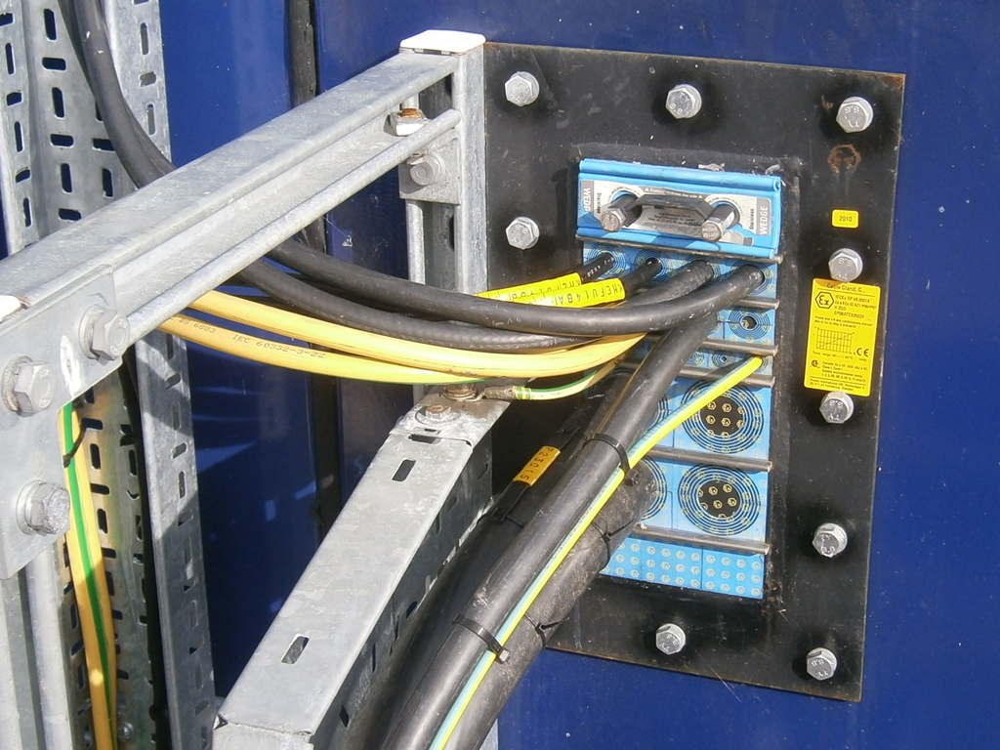
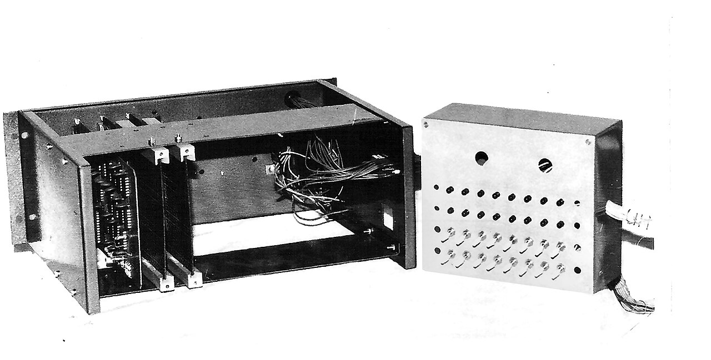

L'Internet des Objets industriel (IIoT) promet une révolution sans précédent dans le monde de la maintenance et de la supervision des actifs. Des capteurs miniaturisés, connectés en permanence, capables de transmettre des données de vibration, de température ou de pression en temps réel vers le cloud : le concept est séduisant. Mais entre la promesse technologique et la réalité brutale d'un plancher d'usine, il existe un gouffre que seuls les ingénieurs chevronnés savent traverser. Car déployer de l'IoT dans un bureau climatisé n'a rien à voir avec implémenter des capteurs sans fil au cœur d'une aciérie, d'une cimenterie ou d'une plateforme offshore. Les environnements industriels dits « difficiles » imposent des contraintes physiques, chimiques et réglementaires qui peuvent réduire à néant le plus élégant des systèmes IoT en quelques semaines.
Dans cet article technique approfondi, nous allons explorer méthodiquement les défis concrets auxquels sont confrontés les ingénieurs terrain lorsqu'ils déploient des réseaux de capteurs IoT dans les environnements les plus hostiles de l'industrie. Nous couvrirons les contraintes environnementales, les normes applicables, les architectures réseau adaptées, le choix des capteurs, les stratégies d'alimentation énergétique, et les retours d'expérience de déploiements réels.
Un capteur IoT qui fonctionne parfaitement au laboratoire mais qui tombe en panne après trois mois en usine n'est pas un capteur défectueux — c'est un capteur mal spécifié pour son environnement.
Partie 1 : Comprendre les « Environnements Difficiles »
Quand un industriel parle d'environnement difficile, il ne fait pas référence à un simple atelier poussiéreux. Le terme couvre un spectre large de conditions hostiles, chacune imposant des contraintes spécifiques sur les équipements électroniques embarqués. Comprendre et classifier ces environnements est le premier pas indispensable avant toute sélection de matériel.
Températures Extrêmes
Dans une fonderie d'aluminium, la température ambiante autour des fours de fusion dépasse régulièrement 80 °C. À l'inverse, dans les installations frigorifiques industrielles où les terminaux de GNL (Gaz Naturel Liquéfié), les capteurs doivent fonctionner à −40 °C, voire −60 °C. La plupart des composants électroniques grand public sont spécifiés pour une plage de 0 °C à +70 °C. Les capteurs de grade industriel doivent être spécifiés en « Extended Temperature Range » (−40 °C à +85 °C) ou « Military Grade » (−55 °C à +125 °C). Les batteries lithium-ion, en particulier, voient leurs performances s'effondrer en dessous de −20 °C, nécessitant le recours à des chimies alternatives comme le lithium-thionyle chloride (Li-SOCl₂) qui maintient sa capacité jusqu'à −55 °C.
Humidité et Corrosion
Les environnements portuaires, les stations de traitement des eaux usées, les papeteries et les industries agroalimentaires exposent les capteurs à une humidité relative souvent supérieure à 95 %, combinée à des atmosphères chargées en chlorures, en acides ou en sels. L'indice de protection IP (selon la norme IEC 60529) devient critique : un boîtier IP67 garantit une protection totale contre la poussière et une immersion temporaire jusqu'à 1 mètre, tandis qu'un IP69K résiste au lavage haute pression à 80 °C. Les connecteurs eux-mêmes doivent être en acier inoxydable 316L ou en titane, et les joints d'étanchéité en EPDM ou Viton résistant aux attaques chimiques.
Vibrations et Chocs Mécaniques
Un capteur monté sur un broyeur à mâchoires dans une carrière subit des forces vibratoires pouvant atteindre 20 g en continu. Les compresseurs industriels, les concasseurs, les centrifugeuses — tous génèrent des vibrations qui peuvent desserrer les connexions, fissurer les soudures et détruire les composants MEMS des accéléromètres eux-mêmes. Les capteurs doivent être qualifiés selon la norme IEC 60068-2-6 (vibrations sinusoïdales) et IEC 60068-2-27 (chocs mécaniques), avec une fixation par goujon fileté directement dans le métal de la machine, jamais par simple aimant dans ces conditions.

Partie 2 : Zones ATEX et Sécurité Intrinsèque
C'est probablement la contrainte la plus redoutable et la plus mal comprise. La directive européenne ATEX (2014/34/UE) impose des exigences drastiques pour tout équipement électrique installé dans des zones où des atmosphères explosives peuvent se former — raffineries, dépôts pétroliers, silos à grain, usines chimiques, mines souterraines.
Classification des Zones
- Zone 0 / Zone 20 : Atmosphère explosive présente en permanence ou pendant de longues périodes. Seuls les équipements de catégorie 1 (niveau de protection « très élevé ») sont autorisés. En pratique, presque aucun capteur IoT commercial n'est certifié pour la Zone 0.
- Zone 1 / Zone 21 : Atmosphère explosive susceptible de se produire en fonctionnement normal. Équipements de catégorie 2 requis. C'est ici que la majorité des capteurs IoT ATEX sont spécifiés, utilisant le mode de protection « Sécurité Intrinsèque » (Ex ia ou Ex ib).
- Zone 2 / Zone 22 : Atmosphère explosive peu probable et de courte durée. Catégorie 3 acceptée. Plus de choix de capteurs disponibles, mais la certification reste obligatoire.
Le principe de la Sécurité Intrinsèque (SI) consiste à limiter l'énergie électrique circulant dans le circuit à un niveau trop faible pour provoquer une étincelle ou un échauffement suffisant pour enflammer l'atmosphère. Pour un capteur IoT, cela signifie des tensions limitées à environ 28 V et des courants à 93 mA en conditions de défaut. Les barrières Zener où les isolateurs galvaniques installés côté « zone sûre » garantissent que même en cas de panne catastrophique, l'énergie ne dépassera jamais les seuils critiques.
Installer un capteur non certifié ATEX en Zone 1, c'est poser une bombe à retardement dans votre installation. La conformité n'est pas optionnelle — elle est vitale au sens propre du terme.
Impact sur les Capteurs IoT Sans Fil
Les capteurs sans fil ATEX posent un défi supplémentaire : la puissance d'émission radio est elle-même limitée par la certification SI. Un module LoRa classique émettant à +20 dBm (100 mW) devra être bridé à +10 dBm (10 mW) en Zone 1, réduisant drastiquement la portée de communication de 2 km à 400 m en milieu industriel encombré. Cela oblige à densifier les passerelles (gateways), augmentant le coût d'infrastructure. Les antennes elles-mêmes sont certifiées avec un gain maximum autorisé pour prévenir les décharges statiques.
De plus, le boîtier doit être de type « enveloppe antidéflagrante » (Ex d) ou « encapsulé » (Ex m), utilisant des résines époxy pour noyer les composants électroniques dans un matériau solide. Le remplacement de batterie en zone ATEX nécessite souvent une procédure de permis de travail à chaud, rendant la maintenance de routine considérablement plus lourde. C'est pourquoi les capteurs ATEX à récupération d'énergie (energy harvesting) par vibration ou thermoélectrique suscitent un intérêt croissant.
Partie 3 : Architectures Réseau pour Environnements Hostiles
Le choix du protocole de communication sans fil est déterminant pour la fiabilité du réseau IoT en environnement industriel. Chaque technologie présente des compromis entre portée, débit, consommation énergétique et robustesse face aux interférences électromagnétiques (EMI).
LoRaWAN
Le protocole LoRaWAN, operant dans les bandes ISM sub-GHz (868 MHz en Europe), offre une excellente pénétration à travers les structures métalliques et en béton des bâtiments industriels. Sa modulation à étalement de spectre (Chirp Spread Spectrum, CSS) lui confère une robustesse naturelle contre les interférences radio. Portée typique en environnement industriel dense : 500 m à 2 km. Débit limité à 0,3–50 kbps, suffisant pour des relevés de température ou de vibrations toutes les 15 minutes, mais insuffisant pour du streaming de données haute fréquence. La topologie en étoile avec passerelles redondantes est recommandée.
WirelessHART
Basé sur le standard IEEE 802.15.4 à 2,4 GHz, WirelessHART est le protocole historique de l'instrumentation industrielle sans fil. Sa topologie en maillage (mesh) auto-cicatrisante le rend extrêmement résilient : si un nœud tombe en panne, le réseau re-route automatiquement les données via les nœuds voisins. C'est le protocole privilégié dans les raffineries et les usines chimiques où la fiabilité est absolument critique. Inconvénient : la bande 2,4 GHz est très encombrée en milieu industriel (WiFi, Bluetooth) et la portée nœud-à-nœud est limitée à 100–200 m.
5G Industrielle et Réseaux Privés
L'émergence des réseaux 5G privés (Non-Public Networks, NPN) ouvre de nouvelles possibilités pour l'IoT industriel. Avec des latences inférieures à 10 ms, un débit atteignant 1 Gbps et le support de plus de 1 million d'appareils par km², la 5G permet des cas d'usage jusqu'ici impossibles : streaming vidéo haute définition de caméras thermiques, digital twins en temps réel, robots mobiles autonomes en usine. Cependant, le coût d'infrastructure d'un réseau 5G privé reste élevé (200 000 € à 500 000 € pour une couverture d'usine complète) et la technologie est encore en phase de maturation industrielle.

Partie 4 : Alimentation Énergétique — Le Talon d'Achille
L'alimentation est systématiquement le facteur limitant numéro un dans les déploiements IoT en environnement difficile. Un capteur qui nécessite un remplacement de batterie tous les six mois dans une zone ATEX ou en haut d'une éolienne offshore n'est tout simplement pas viable économiquement.
Batteries Optimisées
Les batteries lithium-thionyle chloride (Li-SOCl₂) sont la référence pour les applications IoT industrielles longue durée. Avec une densité énergétique de 700 Wh/kg et une auto-décharge inférieure à 1 % par an, elles permettent des durées de vie de 5 à 10 ans pour un capteur transmettant un relevé toutes les 15 minutes. Leur plage de température opérationnelle s'étend de −55 °C à +85 °C. Attention toutefois : ces batteries ne sont pas rechargeables et leur tension de 3,6 V peut provoquer un phénomène de « passivation » après de longues périodes d'inactivité, nécessitant une impulsion de courant élevée pour « réveiller » la cellule.
Récupération d'Énergie (Energy Harvesting)
- Vibrations : Les générateurs piézoélectriques ou électromagnétiques convertissent les vibrations mécaniques de la machine en énergie électrique. Puissance typique : 1 à 50 mW, suffisante pour un capteur avec transmission LoRa toutes les 10 minutes. Idéal sur les machines tournantes (moteurs, pompes, ventilateurs).
- Thermique : Les modules thermoélectriques (Peltier inversé) exploitent les gradients de température entre une surface chaude et l'air ambiant. Un ΔT de 20 °C génère environ 5 à 20 mW. Parfait pour les tuyauteries de vapeur, les fours industriels, les échangeurs thermiques.
- Solaire : Les cellules photovoltaïques intérieures, utilisant du silicium amorphe, peuvent générer 10 à 100 µW/cm² sous un éclairage artificiel de 500 lux. Adapté aux entrepôts bien éclairés mais insuffisant pour les environnements sombres ou poussiéreux.
- Radiofréquence (RF) : La récupération d'énergie RF à partir des signaux WiFi ou cellulaires ambiants est encore à un stade expérimental, produisant typiquement moins de 100 µW — insuffisant pour la plupart des applications industrielles.
Partie 5 : Cybersécurité en Milieu Industriel
L'ajout de milliers de capteurs connectés à un réseau industriel crée autant de points d'entrée potentiels pour des cyberattaques. Le cadre normatif IEC 62443 (« Sécurité des systèmes d'automatisation et de commande industriels ») définit les exigences de sécurité selon quatre niveaux de sécurité (SL-1 à SL-4). Pour un déploiement IoT industriel, un minimum de SL-2 est recommandé, impliquant l'authentification des appareils, le chiffrement des communications de bout en bout (AES-128 minimum), la segmentation réseau et la journalisation des événements de sécurité.
Les capteurs IoT bon marché du commerce grand public utilisent rarement un chiffrement robuste. En milieu industriel, il est impératif de sélectionner des capteurs intégrant un élément de sécurité matériel (Secure Element, SE) comme un TPM (Trusted Platform Module) ou un ATECC608B, qui stocke les clés cryptographiques dans une enclave inviolable. Les mises à jour de firmware OTA (Over-The-Air) doivent elles-mêmes être signées numériquement pour prévenir l'injection de code malveillant.
Dans un monde où une cyberattaque contre une usine peut provoquer un accident industriel majeur, la cybersécurité des capteurs IoT n'est pas un luxe — c'est une obligation de sécurité des personnes.
Partie 6 : Retours d'Expérience et Bonnes Pratiques de Terrain
Après avoir couvert les fondamentaux théoriques, voici les leçons les plus précieuses apprises par les équipes d'ingénieurs ayant mené des déploiements IoT réels dans des environnements hostiles.
Commencer par un Projet Pilote Ciblé
Ne jamais tenter de déployer 500 capteurs d'un coup. Commencer par 10 à 20 appareils sur un périmètre restreint mais représentatif. Valider le signal radio, la tenue mécanique du montage, la durée de vie des batteries et la qualité des données pendant au minimum 3 mois avant de passer à l'échelle. Les projets pilotes permettent aussi de former les équipes de maintenance à la nouvelle technologie et d'identifier les cas d'usage à plus forte valeur ajoutée.
Impliquer les Équipes de Maintenance dès le Jour 1
L'IoT n'est pas un projet IT — c'est un projet de maintenance. Si les techniciens qui connaissent les machines ne sont pas impliqués dans le choix des points de mesure, l'orientation des antennes et l'interprétation des seuils d'alarme, le système produira des alertes non pertinentes et sera rapidement ignoré. Le « sensor fatigue » (la lassitude face à trop de fausses alertes) est le tueur silencieux des projets IoT industriels.
Standardiser et Documenter
Établir une convention de nommage stricte pour chaque capteur (code machine + point de mesure + type de paramètre), maintenir un registre numérique centralisé de tous les appareils déployés avec leur date d'installation, la dernière date de remplacement batterie, la version firmware et l'état de santé. Sans cette discipline documentaire, un parc de 1 000 capteurs devient ingérable en moins d'un an.
Prévoir la Redondance
En environnement critique, chaque donnée vitale doit être collectée par au moins deux capteurs indépendants utilisant si possible des technologies différentes (un accéléromètre filaire + un capteur IoT sans fil, par exemple). La redondance coûte cher à l'achat mais elle est infiniment moins coûteuse qu'un arrêt de production non détecté parce que le seul capteur en place avait perdu sa connexion radio.
Partie 7 : L'Avenir — Edge Computing et Digital Twins
Les architectures IoT industrielles évoluent rapidement d'un modèle « tout-cloud » vers un modèle « edge-first ». Au lieu d'envoyer toutes les données brutes vers le cloud pour traitement, les passerelles de nouvelle génération embarquent des processeurs ARM puissants capables d'exécuter des algorithmes de machine learning directement sur site. Un spectre vibratoire de 6 400 lignes peut être analysé localement en moins de 100 ms, et seules les alertes où les données agrégées sont transmises vers le cloud. Cela réduit la bande passante nécessaire de 99 %, la latence de décision de minutes à millisecondes, et élimine la dépendance à une connexion Internet permanente.
Le concept de « jumeau numérique » (Digital Twin) pousse cette logique encore plus loin. En créant un modèle numérique haute fidélité de chaque machine physique, alimenté en temps réel par les capteurs IoT, les ingénieurs peuvent simuler des scénarios de défaillance, optimiser les paramètres de fonctionnement et planifier la maintenance avec une précision inédite. Les premiers retours d'expérience dans l'industrie pétrolière et gazière montrent des réductions de temps d'arrêt non planifié de 30 à 50 % grâce aux jumeaux numériques couplés à l'IoT.
Le déploiement de l'IoT industriel dans les environnements difficiles n'est pas un simple projet technologique. C'est une transformation organisationnelle qui exige de la rigueur, de la patience et une compréhension profonde des contraintes du terrain. Mais pour les entreprises qui s'y engagent sérieusement, les bénéfices sont considérables : une visibilité totale sur l'état de santé de leurs actifs, une maintenance véritablement prédictive, et une compétitivité renforcée dans un monde industriel de plus en plus exigeant.